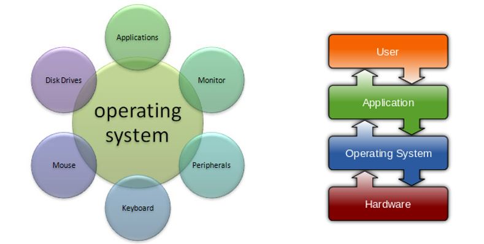
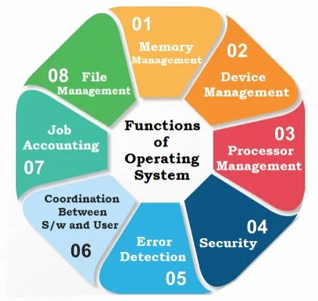

Introduction⚓︎
Objectifs⚓︎
Le 1er objectif est de découvrir quel est le rôle d'un OS afin de pouvoir coder des programmes utilisant des processus / threads.
Cela permettra de paralléliser des actions dans nos futurs programmes.
Aussi, nous verrons de manière simplifiée comment sont ordonnancés les processus, puis comment sont organisés les fichiers.
Définition⚓︎
Un OS est la couche logicielle qui permet et coordonne l’utilisation du matériel entre les différents programmes d’applications.
Tip
C'est donc le lien entre l'homme et le hardware ! On parle d'IHM- Interface Homme Machine

Example
Quelques exemples d'OS :
- Unix based : Linux, Mac, Android, iOS ...
- Windows : XP, Vista, 7, 10 ...
On peut voir l'OS de deux points de vues différents :
- Utilisateur Lambda : Une IHM
- Un développeur : Un ensemble d'appels systèmes
Fonctions d'un OS⚓︎
Offrir une interface de programmation & interpréteur de commandes⚓︎
Un IDE, Une Command Line etc ...
Offrir une interface opérateur conviviale⚓︎
Pour les non programmeurs. Ceci n'est pas obligatoire ;)
Optimiser l’utilisation des éléments du système informatique :⚓︎
Gestion du processeur⚓︎
Le système doit gérer l'allocation du processeur aux différents programmes pouvant s'exécuter (les processus).
Cette allocation se fait par le biais d'un algorithme d'ordonnancement qui planifie l'exécution des programmes.
Selon le type de système d'exploitation, l'algorithme d'ordonnancement répond à des objectifs différents
(Ex. Systèmes Temps Réel)1
Définition d'un Processus
Processus = programme en cours d'exécution.
1 Processus possède trois éléments :
- programme exécutable
- données associées au programme
- contexte d’exécution du programme
Gestion de la concurrence⚓︎
Comme plusieurs programmes coexistent en RAM, ceux-ci peuvent vouloir communiquer pour échanger des données.
Par ailleurs, il faut synchroniser l'accès aux données partagées afin de maintenir leur cohérence.
Le système offre des outils de communication et de synchronisation entre programmes.
Gestion de la mémoire⚓︎
Le système doit gérer l'allocation de la RAM entre les différents programmes pouvant s'exécuter.
Comme la mémoire physique est souvent trop petite pour contenir la totalité des programmes, la gestion de la mémoire se fait selon le principe de la mémoire virtuelle.
A un instant donné, seules sont chargées en RAM les parties de code et données utiles à l'exécution.
Ainsi, chacun des processus accède à toute la mémoire à un instant T.
A cela on ajoute le mécanisme de SWAP qui permet de désengorger le système en déplaçant des modules éxecutables sur la mémoire secondaire (le HDD).
C'est plus lent, mais au moins le système continue de fonctionner !
Gestion des entrées/sorties⚓︎
Le système doit gérer l'accès aux périphériques, c'est-à-dire faire la liaison entre les appels de haut niveau des programmes utilisateurs (exemple getchar()) et les opérations de bas niveau de l‘unité d’exécution responsable du périphérique (UE clavier)
C'est le pilote d'entrées/sorties (driver) qui assure cette correspondance.
Gestion des objets externes⚓︎
La mémoire centrale est une mémoire volatile (RAM). Aussi, toutes les données devant être conservées au-delà de l'arrêt de la machine, doivent être stockées sur une mémoire de masse ( disque dur ).
Gestion de l’accès au réseau⚓︎
Le système doit permettre à des exécutions de programmes, placées sur des machines distinctes, de communiquer.
Le système offre des outils de type socket pour accéder à la couche de protocoles de communication.
Gestion de la protection⚓︎
Le système doit fournir des mécanismes garantissant que ses ressources (CPU, mémoire, fichiers,…) ne peuvent être utilisées que par les programmes auxquels les droits nécessaires ont été accordés.

-
Systèmes TR : Les programmes en exécution sont soumis à des contraintes de temps fortes, c'est-à-dire que leurs exécutions doivent être impérativement achevées à une date butoir appelée échéance (Robotique / Sécurité / Défense)
↩